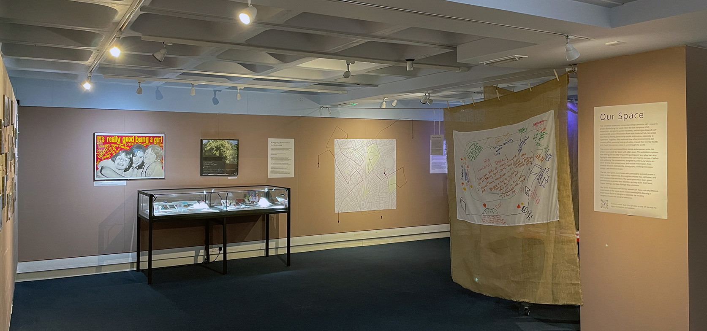
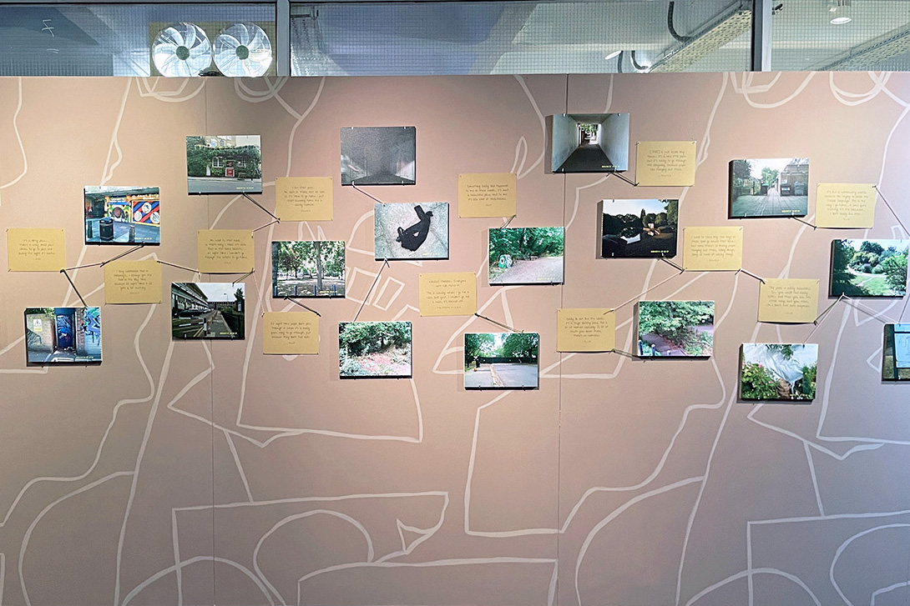
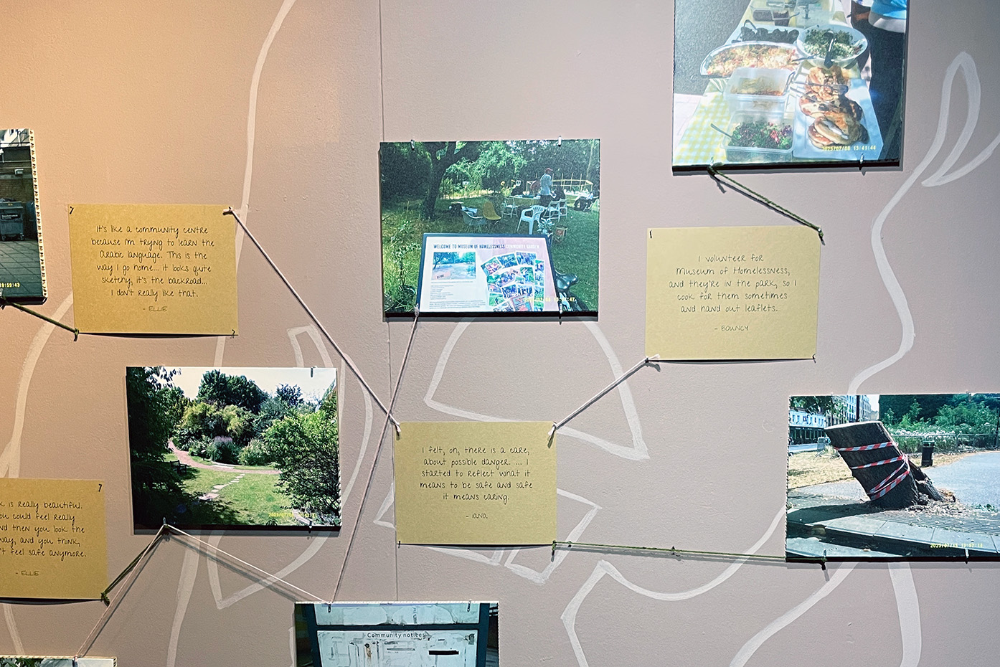
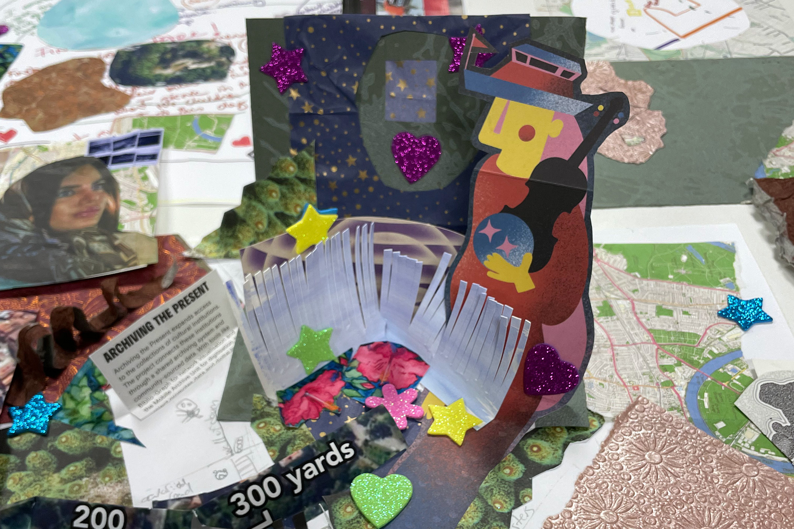
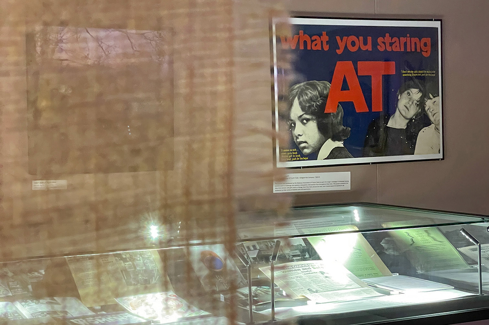
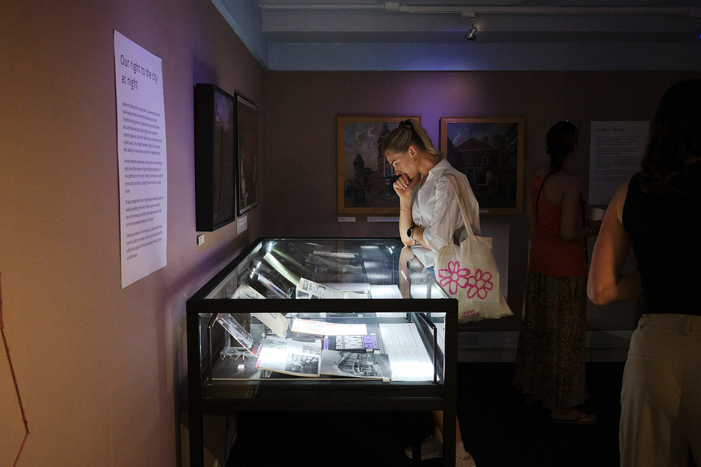
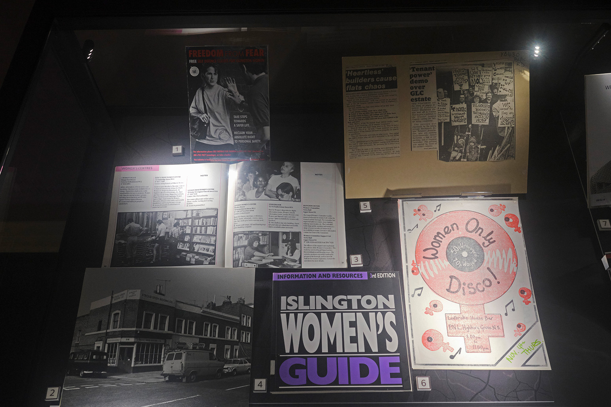
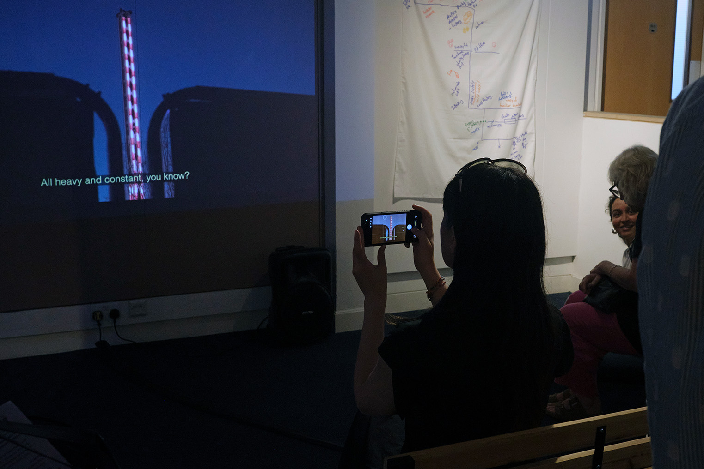
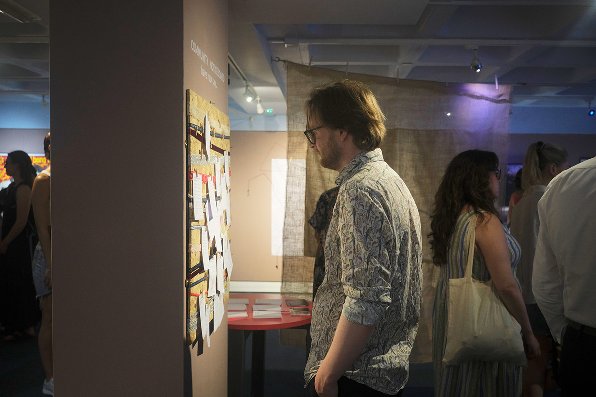
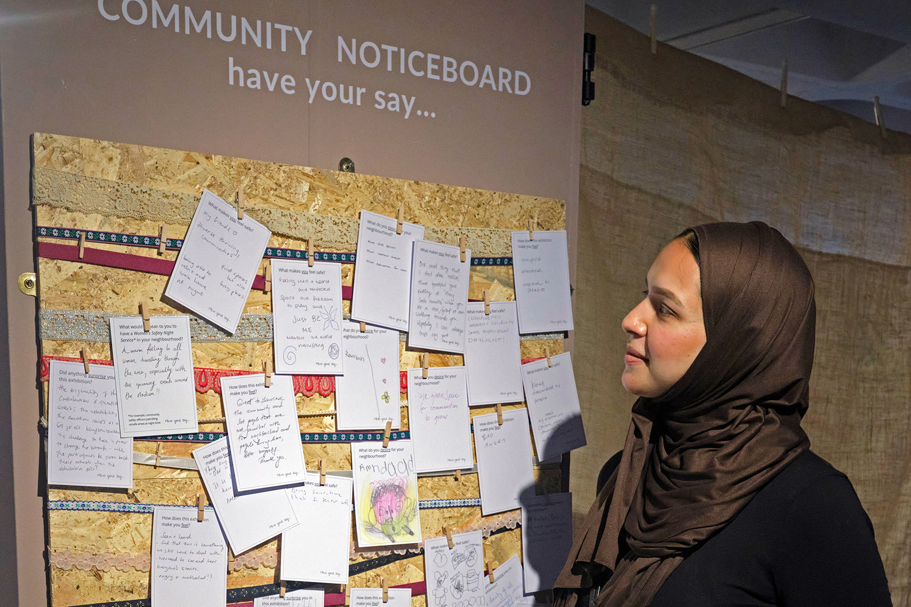

Our Space
Art-Research Exhibition | Islington Museum May-August 2026

Co-designed with participants, the exhibition turns research into an accessible, community-led conversation about safer public spaces. – Statment from Islington Council.
Our Space showcases University College London's (UCL) research project ' Embodying the Social ’. Over the last two years UCL’s researchers, Islington’s women residents, and Islington Council staff examined life around Blackstock Road and Finsbury Park, two areas described as feeling particularly unsafe and intense, especially at night-time. Our Space highlights how connection to community can improve everyday senses of safety and wellbeing in built environments and green spaces.
The installations throughout the exhibition were created by artist Lucy Sabin, who led a co-design workshop with residents and worked in collaboration with curator Sarah Guzman at Islington Museum and UCL researchers Sahra Gibbon, Alice McAlpine-Riddell, and Rosie Mathers. The installations all incorporate project data, including photos, maps, and collages by participants alongside insights from walking interviews and historical archives.
Understanding the diversity of experiences found in Islington is essential for creating neighbourhoods that work for everyone. The exhibition's title was chosen with participants to boldly stake a claim to their experiences, the neighbourhoods they call home, and their voices in this exhibition. The participants have been given pseudonyms to protect their identities as they share their fears, hopes, feelings, and lives through this exhibition. More information can be found on the exhibition website created in StoryMaps.









An excellent exhibition showcasing a great collaboration between UCL and our local authority, Islington! A wonderful curation of voice, objects and art. – Séan McGovern, Community Resilience Officer, Islington Council.
What makes this project especially meaningful is its life beyond the gallery. 'Our Space's' parent project, 'Embodying the Social' has directly informed the UK’s first Women’s Safety Night Service pilot in Finsbury Park, a powerful example of how academic and cultural sectors can amplify lived experiences to affect real-world change. – Sarah Guzman Bijl, Curator, Islington Museum